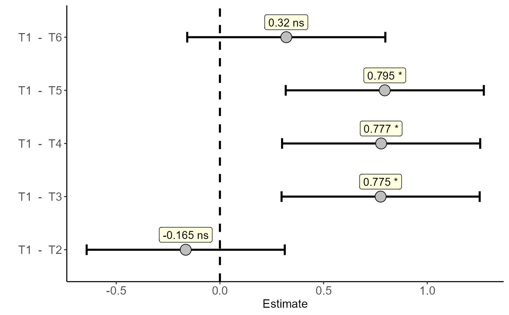

Analysis: Dunnett test
dunnett.RdThe function performs the Dunnett test
dunnett(
trat,
resp,
control,
model = "DIC",
block = NA,
column = NA,
line = NA,
alpha.t = 0.05,
pointsize = 5,
pointshape = 21,
linesize = 1,
labelsize = 4,
textsize = 12,
errorsize = 1,
widthsize = 0.2,
label = "Response",
fontfamily = "sans"
)Arguments
- trat
Numerical or complex vector with treatments
- resp
Numerical vector containing the response of the experiment.
- control
Treatment considered control (write identical to the name in the vector)
- model
Experimental design (DIC, DBC or DQL)
- block
Numerical or complex vector with blocks
- column
Numerical or complex vector with columns
- line
Numerical or complex vector with lines
- alpha.t
Significance level (default is 0.05)
- pointsize
Point size
- pointshape
Shape
- linesize
Line size
- labelsize
Label size
- textsize
Font size
- errorsize
Errorbar size
- widthsize
Width errorbar
- label
Variable label
- fontfamily
font family
Value
I return the Dunnett test for experiments in a completely randomized design, randomized blocks or Latin square.
Note
Do not use the "-" symbol or space in treatment names
Examples
#====================================================
# complete randomized design
#====================================================
data("pomegranate")
with(pomegranate,dunnett(trat=trat,resp=WL,control="T1"))
#> Estimate IC-lwr IC-upr t value p-value sig
#> T1 - T2 -0.1650 -0.6429592 0.3129592 -0.9528 0.8035 ns
#> T1 - T3 0.7750 0.2970408 1.2529592 4.4753 0.0013 *
#> T1 - T4 0.7775 0.2995408 1.2554592 4.4898 0.0011 *
#> T1 - T5 0.7950 0.3170408 1.2729592 4.5908 0.0010 *
#> T1 - T6 0.3200 -0.1579592 0.7979592 1.8479 0.2669 ns

#====================================================
# randomized block design in factorial double
#====================================================
library(AgroR)
data(cloro)
attach(cloro)
#> The following object is masked from simulate3:
#>
#> resp
#> The following object is masked from simulate1:
#>
#> resp
#> The following object is masked from aristolochia (pos = 5):
#>
#> resp
#> The following objects are masked from simulate2:
#>
#> bloco, resp
#> The following objects are masked from laranja:
#>
#> bloco, resp
#> The following object is masked from aristolochia (pos = 8):
#>
#> resp
#> The following objects are masked from cloro (pos = 9):
#>
#> bloco, f1, f2, resp
#> The following object is masked from passiflora:
#>
#> bloco
respAd=c(268, 322, 275, 350, 320)
a=FAT2DBC.ad(f1, f2, bloco, resp, respAd,
ylab="Number of nodules",
legend = "Stages",mcomp="sk")
#>
#> -----------------------------------------------------------------
#> Normality of errors
#> -----------------------------------------------------------------
#> Method Statistic p.value
#> Shapiro-Wilk normality test(W) 0.9548911 0.1117923
#>
#> As the calculated p-value is greater than the 5% significance level, hypothesis H0 is not rejected. Therefore, errors can be considered normal
#>
#> -----------------------------------------------------------------
#> Homogeneity of Variances
#> -----------------------------------------------------------------
#> Method Statistic p.value
#> Bartlett test(Bartlett's K-squared) 16.11086 0.02412261
#>
#> As the calculated p-value is less than the 5% significance level, H0 is rejected. Therefore, the variances are not homogeneous
#>
#> -----------------------------------------------------------------
#> Independence from errors
#> -----------------------------------------------------------------
#> Method Statistic p.value
#> Durbin-Watson test(DW) 2.047899 0.1769663
#>
#> As the calculated p-value is greater than the 5% significance level, hypothesis H0 is not rejected. Therefore, errors can be considered independent
#>
#> -----------------------------------------------------------------
#> Additional Information
#> -----------------------------------------------------------------
#>
#> CV (%) = 28.29
#> Mean Factorial = 218.35
#> Median Factorial = 185
#> Mean Aditional = 307
#> Median Aditional = 320
#> Possible outliers = No discrepant point
#>
#> -----------------------------------------------------------------
#> Analysis of Variance
#> -----------------------------------------------------------------
#> Df Sum Sq Mean.Sq F value Pr(F)
#> Fator1 1 16160.400 16160.400 3.8772062 5.765683e-02
#> Fator2 3 116554.500 38851.500 9.3212591 1.409219e-04
#> block 4 7122.311 1780.578 0.4271966 7.878578e-01
#> Fator1:Fator2 3 452096.200 150698.733 36.1556682 2.154175e-10
#> Ad x Factorial 1 34928.100 34928.100 8.3799563 6.781309e-03
#> Residuals 32 133377.689 4168.053
#>
#>
#> Your analysis is not valid, suggests using a non-parametric test and try to transform the data
#>
#> -----------------------------------------------------------------
#> Significant interaction: analyzing the interaction
#> -----------------------------------------------------------------
#> Df Sum Sq Mean Sq F value Pr(>F)
#> Fator2 3 116554 38851 9.3213 0.0001409 ***
#> block 4 11614 2903 0.6966 0.5999233
#> Fator2:Fator1 4 468257 117064 28.0861 4.580e-10 ***
#> Fator2:Fator1: Plantio 1 26112 26112 6.2648 0.0176146 *
#> Fator2:Fator1: R1+15 1 70896 70896 17.0095 0.0002467 ***
#> Fator2:Fator1: V1+15 1 258888 258888 62.1125 5.419e-09 ***
#> Fator2:Fator1: V3+15 1 112360 112360 26.9574 1.137e-05 ***
#> ---
#> Signif. codes: 0 '***' 0.001 '**' 0.01 '*' 0.05 '.' 0.1 ' ' 1
#>
#> -----------------------------------------------------------------
#> Analyzing F2 inside of the level of F1
#> -----------------------------------------------------------------
#>
#> Df Sum Sq Mean Sq F value Pr(>F)
#> Fator1 1 16160 16160 3.8772 0.057657 .
#> block 4 11614 2903 0.6966 0.599923
#> Fator1:Fator2 6 568651 94775 22.7385 2.974e-10 ***
#> Fator1:Fator2: IN 3 75470 25157 6.0356 0.002232 **
#> Fator1:Fator2: NI 3 493181 164394 39.4414 7.343e-11 ***
#> ---
#> Signif. codes: 0 '***' 0.001 '**' 0.01 '*' 0.05 '.' 0.1 ' ' 1
#>
#> -----------------------------------------------------------------
#> Final table
#> -----------------------------------------------------------------
#> Plantio R1+15 V1+15 V3+15
#> IN 272.8 aA 236.6 aA 140.4 bB 304.0 aA
#> NI 170.6 bB 68.2 bC 462.2 aA 92.0 bC
#>
#>
#> Averages followed by the same lowercase letter in the column and
#> uppercase in the row do not differ by the sk (p< 0.05 )
 data=rbind(data.frame(trat=paste(f1,f2,sep = ""),bloco=bloco,resp=resp),
data.frame(trat=c("Test","Test","Test","Test","Test"),
bloco=unique(bloco),resp=respAd))
with(data,dunnett(trat = trat,
resp = resp,
control = "Test",
block=bloco,model = "DBC"))
#> Estimate IC-lwr IC-upr t value p-value sig
#> Test - INPlantio -34.2 -148.76188 80.36188 -0.8376 0.9478 ns
#> Test - INV1+15 -166.6 -281.16188 -52.03812 -4.0802 0.0019 *
#> Test - INV3+15 -3.0 -117.56188 111.56188 -0.0735 1.0000 ns
#> Test - INR1+15 -70.4 -184.96188 44.16188 -1.7242 0.4038 ns
#> Test - NIPlantio -136.4 -250.96188 -21.83812 -3.3405 0.0136 *
#> Test - NIV1+15 155.2 40.63812 269.76188 3.8010 0.0042 *
#> Test - NIV3+15 -215.0 -329.56188 -100.43812 -5.2655 0.0001 *
#> Test - NIR1+15 -238.8 -353.36188 -124.23812 -5.8484 0.0000 *
data=rbind(data.frame(trat=paste(f1,f2,sep = ""),bloco=bloco,resp=resp),
data.frame(trat=c("Test","Test","Test","Test","Test"),
bloco=unique(bloco),resp=respAd))
with(data,dunnett(trat = trat,
resp = resp,
control = "Test",
block=bloco,model = "DBC"))
#> Estimate IC-lwr IC-upr t value p-value sig
#> Test - INPlantio -34.2 -148.76188 80.36188 -0.8376 0.9478 ns
#> Test - INV1+15 -166.6 -281.16188 -52.03812 -4.0802 0.0019 *
#> Test - INV3+15 -3.0 -117.56188 111.56188 -0.0735 1.0000 ns
#> Test - INR1+15 -70.4 -184.96188 44.16188 -1.7242 0.4038 ns
#> Test - NIPlantio -136.4 -250.96188 -21.83812 -3.3405 0.0136 *
#> Test - NIV1+15 155.2 40.63812 269.76188 3.8010 0.0042 *
#> Test - NIV3+15 -215.0 -329.56188 -100.43812 -5.2655 0.0001 *
#> Test - NIR1+15 -238.8 -353.36188 -124.23812 -5.8484 0.0000 *